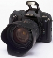

器材库 > 胶片单反相机 > MZ-S

规格总览
产品类型
自动对焦胶片单反相机
发布日期
2001-05
厂家推荐价格
135,000.00 （日元）
镜头卡口
Pentax AF
停产
是
取景规格
取景器
眼平五棱取景器, 固定
取景范围
92%
取景放大倍率
0.75倍
屈光度调节范围
-2.5~+1.5
对焦屏
固定
反光镜
快速瞬回半透明
景深预视
有
对焦系统
自动对焦系统类型
TTL相位检测系统
对焦点
6
AF检测范围
-1-18EV
对焦模式
单次AF, 连续AF
焦点预测
有
AF辅助灯
有
曝光控制
测光模式
中央重点测光, 多分区评价测光, 点测光
测光范围
1-20EV
曝光模式
P（程序自动曝光）, A（光圈优先自动曝光）, S（快门速度优先自动曝光）, M（手动测光曝光）
ISO感光度
DX：ISO 25-5000/M：ISO 6-6400
曝光补偿
±3EV
自动包围曝光
3/2/5张，(1/2、1)
多重曝光
有
自动曝光锁
有
快门
快门类型
纵走式焦平面快门
快门速度
30-1/6000 s+B
闪光同步速度
1/180秒
自拍
12秒, 2秒
无线遥控
有
内置闪光灯
闪光指数
12
后帘同步
有
外接闪光灯
PC插孔
有
用户自选功能
用户自选功能
17
电源
电池
2 x CR2
外观
颜色
黑色
尺寸
136.5 x 95.0 x 64.0mm
重量
520g
yufake2013-04-26 22:424.92 分
操作性 5.00功能性 5.00美观性 5.00趣味性 5.00耐用性 5.00性价比 4.50
hayekting2013-02-18 14:384.92 分
操作性 5.00功能性 5.00美观性 5.00趣味性 5.00耐用性 5.00性价比 4.50
equinoxmint2011-06-12 21:334.17 分
操作性 4.50功能性 5.00美观性 4.50趣味性 5.00耐用性 4.00性价比 2.00
至尊宝2009-05-27 08:075 分
操作性 5.00功能性 5.00美观性 5.00趣味性 5.00耐用性 5.00性价比 5.00
老派2008-06-06 20:564.75 分
操作性 4.50功能性 4.50美观性 5.00趣味性 5.00耐用性 5.00性价比 4.50
pnp12003-11-12 12:004.42 分
操作性 4.50功能性 4.00美观性 5.00趣味性 5.00耐用性 4.50性价比 3.50
天狼2003-10-22 14:034.5 分
操作性 4.50功能性 4.50美观性 4.50趣味性 5.00耐用性 4.50性价比 4.00
自在天2003-05-28 19:514.08 分
操作性 3.00功能性 4.50美观性 5.00趣味性 4.50耐用性 4.00性价比 3.50
LaoBai2002-12-16 03:104.5 分
操作性 4.50功能性 4.50美观性 5.00趣味性 5.00耐用性 4.50性价比 3.50
歧山猴2002-05-25 09:244.25 分
操作性 4.50功能性 4.00美观性 5.00趣味性 4.00耐用性 4.50性价比 3.50
timyi2002-04-14 00:394.67 分
操作性 5.00功能性 4.50美观性 5.00趣味性 5.00耐用性 4.50性价比 4.00
苏帆2002-04-13 05:504.58 分
操作性 5.00功能性 4.50美观性 5.00趣味性 4.50耐用性 4.50性价比 4.00
产品图 / 样片
Pentax MZ-S
评测 / 相关文章
该产品暂无存档的评测文章